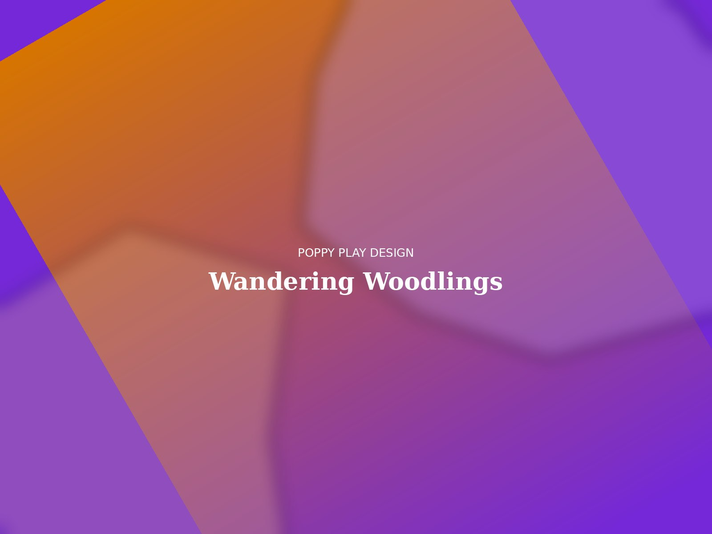
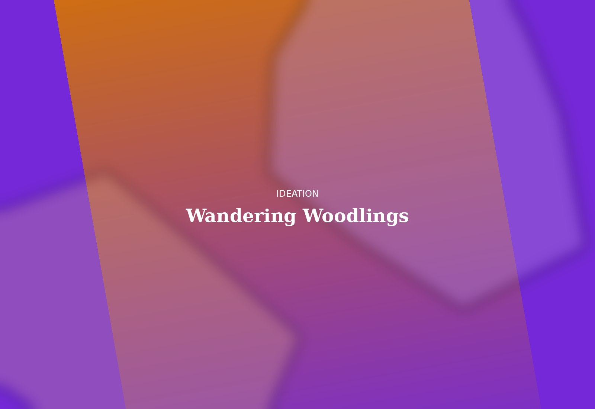
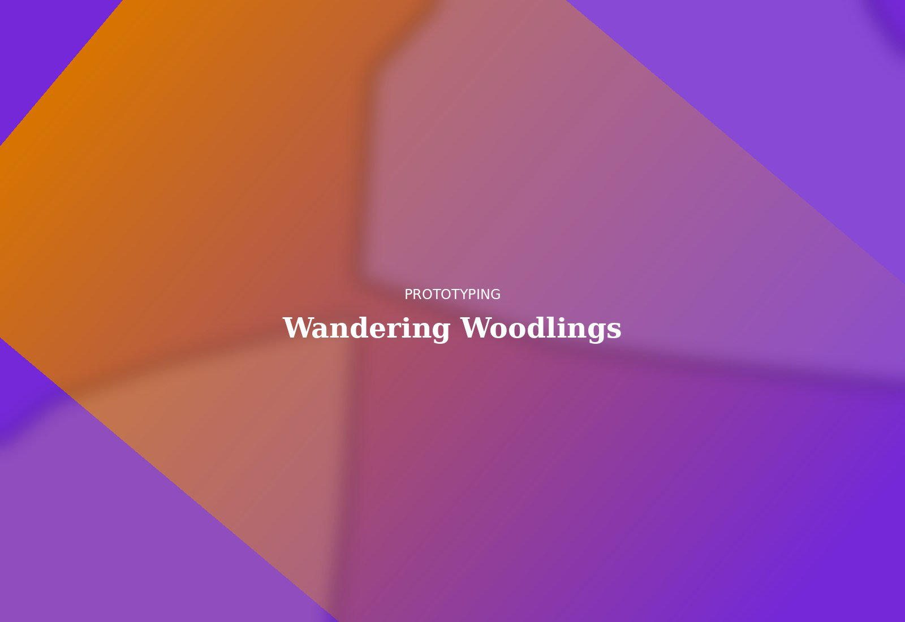
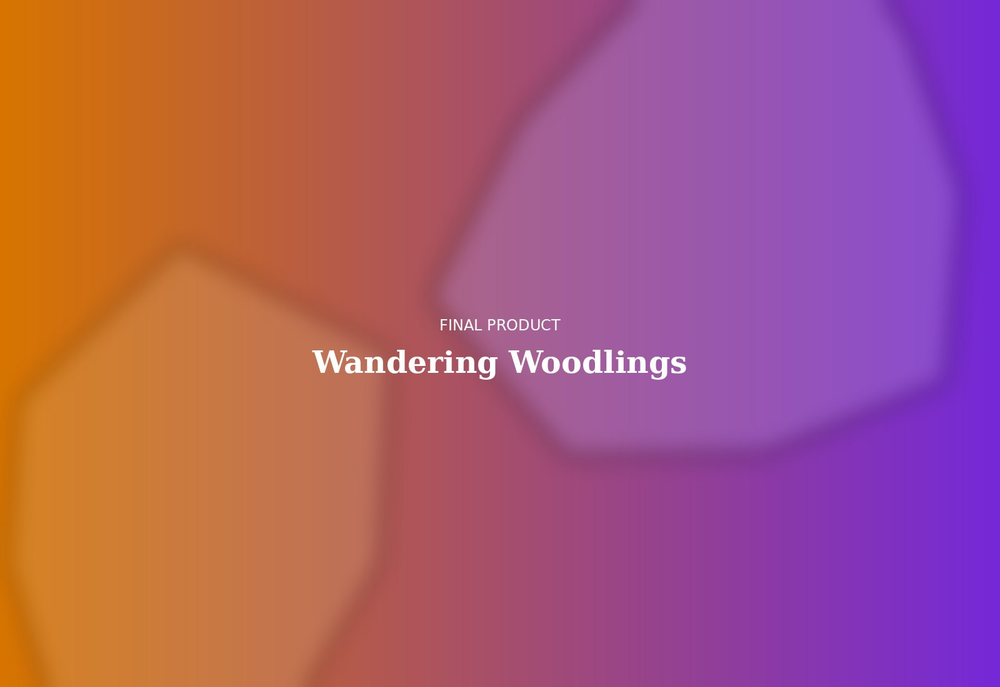

Wooden Toy Set
A modular set of stackable woodland creatures designed for open-ended play and shelf display alike. The challenge was balancing genuine child-safe durability with a silhouette refined enough to hold its own in a boutique window — every curve had to survive both a toddler's grip and a designer's eye.


Dozens of thumbnail silhouettes, narrowed down to forms that read clearly at toddler eye-height.

Hand-carved basswood prototypes tested for grip, stack stability, and edge safety across three rounds.

Beeswax-finished basswood, hand-sanded to a soft touch and packaged in compostable kraft.